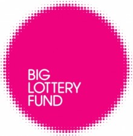

The Big Lottery Fund, Communities Living Sustainably will fund partnerships that bring together the public, private, voluntary and community sectors to build up to 10 sustainable and resilient communities to help deal with the potential impact of climate change.
These communities will provide inspiration and share their learning with other communities across England. We are particularly interested in supporting the most vulnerable groups and communities who are more likely to be affected by climate change.
Proposals from partnerships must meet all of the following outcomes:
- Communities are better prepared for environmental challenges and longer term environmental change and understand the improvements they can make to live more sustainably.
- Vulnerable people affected by the impacts of climate change are able to make greener choices to help improve their quality of life.
- Communities maximise the use of their assets and resources to create new economic opportunities and live more sustainably.
- Communities have a greater understanding of and more opportunities to use natural resources more efficiently.
The programme will invest in up to 10 communities by providing:
- access to expert support and advice to help each community to develop their skills, knowledge and abilities and build on best practice among communities
- up to £10,000 to develop a project delivery plan that details the environmental, economic and social challenges affecting the community and how they can be addressed
- grants of between £500,000 and £1 million for up to five years for a range of activities and initiatives within a local community.
For this programme:
- A community is defined as people who live and work in a geographical location with a population of more than 10,000.
- Living in a sustainable way means living in a way that meets the social, environmental and economic needs of the community now and without compromising the ability of future generations to meet their needs.
The big Lottery Fund will be working with partners on this programme to:
- support you, if you are awarded funding, to learn from your work and share your learning within your community
- run a learning network of all funded projects which we’ll expect those awarded a grant to join
- help us to gather and share learning from all the communities we’ve funded, with the communities playing an active role.
What to do next...
Visit www.biglotteryfund.org.uk/prog_communities_living_sustainably?tab=2®ioncode=-uk and find out more about the application process and exact details of how to apply.
The dates for applications are between 29 November 2011 to 31 January 2012.